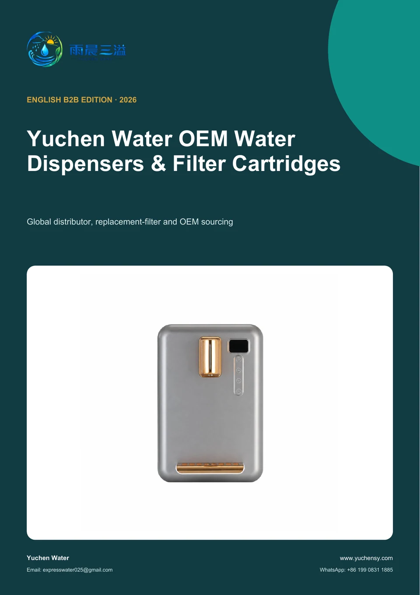

English B2B edition
Download the Yuchen Water OEM Product Catalog
Review instant heating water dispensers and water purifier filter cartridges in one customer-ready English PDF.
✓ Product profiles✓ Product-family navigation✓ Instant heating dispenser catalog✓ Replacement filter cartridge sourcing

Catalog coverage
Product families in one catalog
The PDF follows the online product collection and presents each model in a compact format for distributor, OEM and replacement-filter sourcing.
Instant Heating Water Dispensers
Bayonet-Lock Filter Cartridges
Korean-Type Quick-Connect Inline Filter Cartridges
Korean-Type Quick-Connect Inline Filter Cartridges – Series 2
Flat-End Filter Cartridges
Plug-In Water Purifier Filter Cartridges
Female-Threaded Inline Filter Cartridges
Mineralization, Scale-Inhibition & Resin Cartridges
Big Blue Filter Cartridges
Private PDF access
Complete the form to download
Complete all buyer, contact and project fields so the sales team can qualify your request and provide the private catalog securely.
- A4 English product catalog
- Instant heating dispenser and filter cartridge profiles
- No public pricing or unsupported certification claims